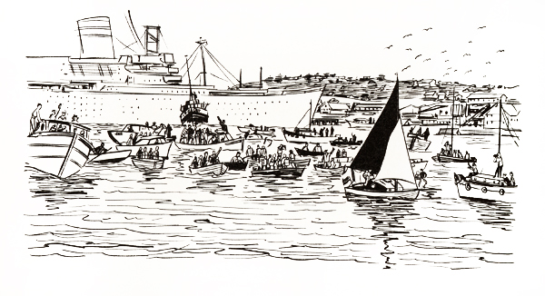
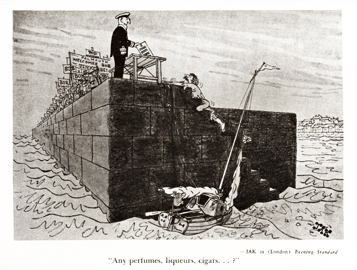

"TINKERBELLE"
Chapter 19
This day, our seventy-eighth since leaving Cape Cod, promised to be momentous. There seemed to be a portentous tingle in the air, as if it were charged with electricity. I could feel goose bumps rising on my skin and spasmodic shivers running up and down my back. I hoped I could live through what was coming.
We were about four miles off the Lizard, as close as I cared to get because of what I'd heard about the dangerous rip tides that swept around its base. I didn't want Tinkerbelle's bones to be added to those of other vessels that littered the ocean floor in that area. So we stayed a comfortable distance offshore.
I backed Tinkerbelle's genny and lashed down her tiller to heave to for some breakfast. It seemed prudent to eat at once, while I had the chance, to build up strength for what might lie ahead. I also bathed as well as I could, shaved, got my mustache into the best shape possible and put on the cleanest clothes I had. And then I spruced up Tinkerbelle with Old Glory flying from a staff at her stern and the Union Jack fluttering from her starboard shroud. I must say she looked a gallant little lady with those flags snapping merrily in the breeze.
When all these preparations were completed, I looked shoreward again and found that the Lizard Light had stopped blinking; in the daylight it was no longer needed. About the same time the sun rose above the edge of the sea and, soon after, surrounded us with pleasant warmth. It heightened the colors and rolling configuration of the country side: that beautiful, beautiful land. It revealed, too, that the sky today, August 17th, would be blue. It was going to be a wonderful day.
We started moving again, northeastward toward the fearsome Manacles, jagged rocks that reached out from the shore like the lower jaw and teeth of a gigantic monster. The wind had shifted into the west and had become several knots lighter, but we were still able to travel at a good clip. There were no other vessels in sight; we had this section of the channel all to ourselves.
I looked back over the stern toward the sea we were leaving behind and again I don't mind admitting I felt a few sharp pangs of regret. There was peace out there of a sort one could never find on land; there was quiet, too, and even more important, a challenge that brought out the best in one and focused it on basic, consequential things. I felt the experience had enriched my life; and I hoped that, through me, it might touch the lives of others.
I had become well acquainted with loneliness and I believe that gave me a greater comprehension of the value of human companionship. The sea had its drawbacks, though; there was no doubt about that. It couldn't give you a formal education (or even a well-balanced informal one), or love or a helping hand when you needed it. The sea was cold, disinterested, impartial. There was no real warmth to it, no sharing of knowledge or feelings. And yet there was one hugely wonderful thing to be said for the sea; it was always the sea. It was the sea and nothing else. It couldn't dissimulate. It couldn't say one thing while thinking another. It couldn't flatter you and turn your head. There wasn't a treacherous or dishonest wave in its whole massive body.
Another thing I liked about the sea was that I could pit myself against it without fear of injuring another human being. Nothing I did mattered at all to the sea; nothing I did could hurt it in the least. But in the hurly-burly of life ashore, where people were pitted against one another in a furious scramble for success, it was almost impossible to avoid hurting others or
being hurt by them. I wasn't much of a scramble and that's why I liked that nice cozy seat on the rim of the P.D. copy desk. It was a relatively peaceful spot, like the eye of a hurricane.
We were approaching Black Head now, about halfway between Lizard Head and the Manacles, and as I looked toward the west I saw a sailboat disengage itself from the shore and head toward us. Then other craft, sailboats and motorboats, came into sight to the north, all moving in our direction.
The first sailboat, the one in the west, closed in fast and as it passed those on board waved in a most friendly way and called out, "Well done! Well done!" And I shouted back, "Thank you! Thanks for coming out to see me!" It was the first of hundreds of similar exchanges that took place that day.
As we approached the Manacles, I thought that we were probably sailing over the very same channel floor that the Invincible Armada had sailed over more than three hundred and seventy-seven years earlier while on its way to meet the British fleet off Plymouth. And no sooner had the possibility popped into my mind than another armada appeared on the scene, this one English and headed south, straight for Tinkerbelle and me. It came toward us fast, turned and then swept us up into its bosom to escort us the remaining few miles to Falmouth; and as it moved along it continued to grow. It was a fantastic sight.
One of the first boats to reach us was an R.A.F. launch carrying a few of the pilots who had so kindly watched over us as we neared the coast. Someone on the launch thrust a marvelous sandwich and a nice cup of hot coffee into my hands. How good each tasted! It was about noon and I was getting hungry.
Shortly after that some Royal Navy helicopters arrived to form an umbrella over us as we sailed in. It was wonderful of them to come and I appreciated the honor immensely; the only trouble was that the backwash from the rotors whipped Tinkerbelle's mains'l back and forth in an alarming way that prevented it from functioning properly. It behaved like a whirligig. I guess the choppers saw what was happening, for in a very short
time they considerately moved off and things slipped back more or less to routine.
I think it was about one o'clock when we passed by the menacing Manacles, keeping well offshore for safety's sake. And then the boats really began to swarm around us. They were just like bees around a hive. It was absolutely astounding. I heard a newsman estimate that there were three hundred craft surrounding Tinkerbelle, which made this armada more than twice the size of the Spanish one, in numbers of vessels if not in total
 |
tonnage. I think perhaps the man may have put the figure a little high in the enthusiasm of the moment, but, anyway, there were an awful lot of boats out there. I doubt if anyone had seen anything like it since World War II, when an enormous fleet of small boats helped to take three hundred and fifty thousand trapped Allied soldiers off the beaches of Dunkirk.
Many of Falmouth's commercial craft had gone to work ferrying people out to see Tinkerbelle and me as we neared the harbor. They were jammed to the gunwales and whenever one went by a chorus of "Well dones" would fill the air. And then I'd call out "Thank yous" and we'd all wave happily to each other. Americans often think of the English as being a little stiff
and standoffish, but let me say at once that isn't true. I have never met more friendly, more warmhearted people than I met that day. They couldn't have been nicer.
And I must say those Englishmen were no slouches when it came to business. You can believe this or not, but postcard pictures of Tinkerbelle sailing along in the armada were being sold even before we reached the harbor entrance. How it was accomplished, I don't know. But I do know it was being done, because I got one of the cards while we were still miles from our goal.
Radio newsman Robert Forbes got in some pretty fast licks, too. He came aboard Tinkerbelle and tape-recorded an interview with me as we sailed along, then said "Thank you," got back on his own boat and churned off. A few minutes later, while we were still sailing toward Black Rock, at the mouth of the harbor, I heard the interview over a portable radio on an adjacent boat. It was a novel experience for me to be interviewed in the first place (as a former reporter, I was accustomed to asking questions instead of answering them), but to be interviewed and then to hear the interview within a very few minutes, that was really something!
Before we had progressed very far past the Manacles, the fishing boat Girl Christian came alongside and on it were Virginia and Robin and Douglas. It was wonderful to see the children, at last, and to see Virginia again. I could hardly wait until we were all together ashore. What a marvelous reunion it would be. The Plain Dealer and Daily Mirror newsmen were also on the boat and it was good to see them again, too. We all chatted like magpies for a few minutes and then the Girl Christian hurried back to shore. Those aboard her were to meet me when I docked at Custom House Quay.
By this time it was after 6 P.M. and although we were only about two miles from the harbor entrance it began to look as though Tinkerbelle wasn't going to make it in before nightfall. The wind had fallen off to almost nothing. We were held to an
agonizingly slow pace. But then the harbormaster, Captain Francis H. Edwards, came along and offered me a tow. I had hoped Tinkerbelle would sail in all by herself so I was reluctant to accept the offer, but then I thought of all the people waiting on shore to see us (including the mayor) and how disappointed they might be and, in fact, how disappointed I would be, too, if we didn't make it before dark, so I finally agreed.
We were soon moving again at a lively pace and the increased tempo seemed to accentuate the holiday mood of the escorting armada. Boats circled, crisscrossed and flocked all about us. Several times I thought we were going to be crushed. People cheered and shook my hand and gave me the thumbs-up victory sign and passed me things to eat. One young fellow in a small runabout stayed alongside for quite a while and gave me a couple of Cornish pasties. A few persons simply wanted to touch me, as if I had some magical power to impart. Others shouted, "Well done!" "Good show!" or "Glad you made it, mate!"
I patted Tinkerbelle on the stern and said "Well done!"
It was nearly seven when we approached Black Rock. Off to port the shore was a solid mass of people and behind them, at the top of a small hill, were the ruins of Pendennis Castle, ancient guardian of Falmouth, its ramparts crowded with more spectators. If I half closed my eyes, it was easy to imagine the spectators were Romans defending the castle against attacking Saxxons. It was a spectacular sight.
We turned to port, moved past Falmouth's famous docks and shipyards and on to the Custom House Quay. People were everywhere: standing along the shore, perched on window ledges, leaning out of doorways, crowded onto jetties, thronging the streets, clinging to trees and cramming the inner harbor in boats of every size and description. The whole place was teeming with humanity. I heard later that fifty thousand people were there to see Tinkerbelle and me complete our voyage.
I was simply dumfounded, numbed by the enormity of it all and not a little bewildered. It was just too much to take in all at once.
 |
I put down a couple of fenders to protect Tinkerbelle from the stone quayside and then, after seventy-eight days of living on a pitching, rolling swaying boat, I stepped ashore. And almost fell flat on my face!
The quay seemed to be shaking, as if an earthquake were in progress. I wobbled about and staggered like a man who had had too much grog; and with all those people watching. It was embarrassing. I could see it was going to take a few days to get back my land legs.
Most of what happened after that is blurred in my mind. I was too stunned to comprehend fully, or remember. I do recall, though, that every boat and ship in the harbor let go with its horn or whistle and shook the waterfront with reverberating sound as the crowd yelled, R.A.F. Shackletons flew overhead in wigwagging salutes and a band on the quay (I heard later it was the St. Stythians Silver Band) played "The Star-Spangled Banner" and "The Stars and Stripes Forever."
I hugged and kissed Virginia, Robin and Douglas and then met Samuel A. Hooper, mayor of Falmouth, who looked most impressive in his scarlet robes and golden chain of office. He welcomed me to the city and I apologized for delaying his vacation. Then I knelt and kissed the stones of the quay in thanksgiving for a safe passage across the ocean and in gratitude for the warm welcome I was receiving.
The pier was a mass of faces. People waved flags, pointed cameras, fired flashbulbs, cheered. I waved and shouted back, "Hi, everybody!" When a newsman asked me what I though of the welcome, all I could say was "I'm flabbergasted!" But I felt as if I had been elected President.
Then it was time to go. We were led through the crowd toward some autos on the quay and Virginia and I were asked to get into the back of one of them. Before I got into the car, I felt pricks of conscience at the thought of leaving Tinkerbelle.
I looked back to where I knew Russ Kane and the Falmouth police were looking after her, but she was hidden by the high side of the quay and by the crowd. I couldn't even see the tip of her mast.
It was all over now, all behind us. The voyage was dead. I felt a lump rising in my throat. I looked around and I heard the "Well dones" and felt the handshakes of those nearest to me. And then I knew that, for Tinkerbelle and me, our voyage over, what Tinker Belle's friend Peter Pan had once said was true: To die was an awfully big adventure.
TABLE OF CONTENTS | COMMENTS FOR SAILORS